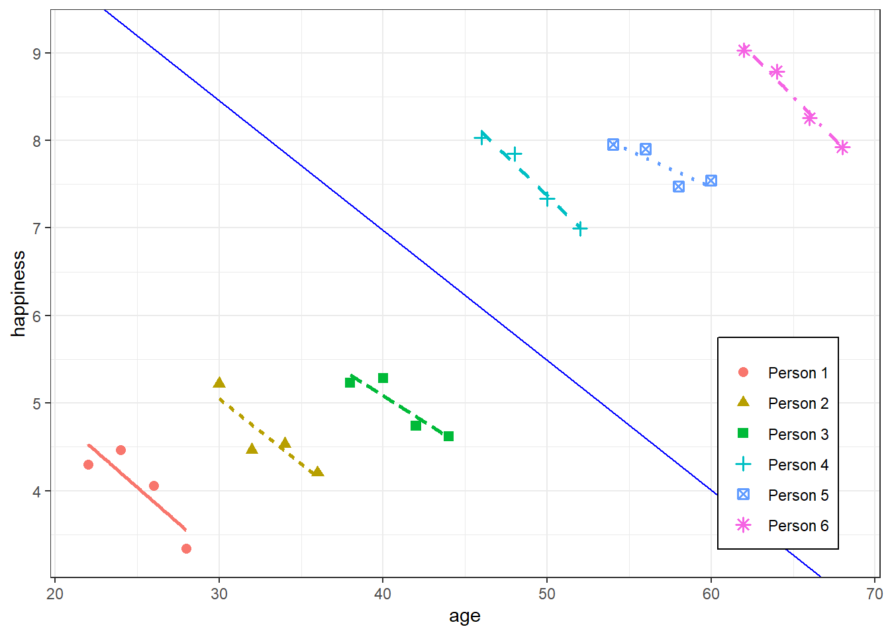

50 Econometrics, Fixed Effects
TOC
- Fixed Effects (FE)
- Fixed Effects with Individual Slopes (FEIS)
notes
- todo
- see {etwfe} vignette for woolridge method
- Re-read printed results and compare with corollary descriptions. Try to figure out what the fuck hes saying
- I think the two results might conflict in the union/lwage example. What do you do when that happens
- Finish paper examples and see what his conclusions are
- Run on data of first example (newpapers) and see if its also close
- add results of pkg to each example
- they dont match the paper, but theyre close. Could be just rounding errors
- Organize this first section as notes on the Heiss/Jakiela article
- Choose whats going into note in Papers notebook and what stays here in the TWFE section
- Maybe email the bastard that made that pkg
- THREAD +paper, biased estimates for multi-treatment with saturated group adjustment variables
- issue: potential danger of biased effects when treatment is assigned during different periods for each group
- example: group 1 is untreated at periods 1 and 2 and treated at period 3, while group 2 is untreated at period 1 and treated both at periods 2 and 3
- When the treatment effect is constant across groups and over time, FE regressions estimate that effect under the standard common trends assumption.
- requires that the expectation of the outcome without treatment follow the same evolution over time in every group
- estimates can be severely biased and may even be incorrectly signed when treatment effects change over time within treated units (aka hetergeneous treatment effects)
- Fundamentally, the main reason TWFE estimates get weird and biased with differently-timed treatments is because of issues with weightsin TWFE settings, treated observations often get negative weights and vice versa
- According to Jakiela (2021, 5), negative weights in treated observations are more likely in (1) early adopter countries, since the country-level treatment mean is high, and (2) later years, since the year-level treatment mean is higher.

- So, in general, the bias comes from entity variable categories that received the treatment early and the biased weight estimates occur on observations with later time values. This is because of the extreme treatment imbalance during these ranges/intervals, and its effect on the outcome variable.
- Having negative weights on treated observations isnt necessarily bad! Its often just a mathematical artefact, and if you have (1) enough never-treated observations and (2) enough pre-treatment data, and if (3) the treatment effects are homogenous across all countries, it wont be a problem. But if you dont have enough data, your results will be biased and distorted for later years and for early adopters.
- Diagnostics
- Do any treated units get negative weight when calculating TWFE? Check this by looking at the weights
- Can we reject the hypothesis that the treatment effects are homogenous? Check this by looking at the relationship between Yit and Dit. The slope shouldnt be different.
- treatment effect homogeneity implies a linear relationship between residualized outcomes and residualized treatment after removing the fixed effects
- comment
- She states that shes only looking for linearity between the two sets of residuals, but actually breaks it down further by checking whether the relationship varies by treatment. This whole procedure is computing a partial correlation except instead of the last step of measuring the correlation between the two sets of residuals (e.g. cor.test(treatment_resid, out_resid) and getting the p-value, she looks at an interaction.
- Thanks for writing this. I dont understand the homogeneity check in 3.2 though. She says that if the linearity relationship varies by treatment then this breaks assumptions for TWFE models. Ive only looked at her paper and the Chaisemartin paper, and the only assumptions I saw for TWFE models in general was the common trends and the strong exogeneity assumption. I think this is more likely to be about the common trends assumption, and my understanding of that one is that it pertains to the effect across time for a particular group. Im guessing theres a connection between those two concepts, but Im not seeing it.
- Two-way fixed effects estimators with heterogeneous treatment effects
- author: Chaisemartin
- paper: arxiv
- data: website
- conditional on all treatments, the absolute value of the expectation of fe divided by the standard deviation of the weights is equal to the minimal value of the standard deviation of the ATEs across the treated (g, t) cells under which the average treatment effect on the treated (ATT) may actually have the opposite sign than that coefficient. One can estimate that ratio to assess the robustness of the two-way FE coefficient. If that ratio is close to 0, that coefficient and the ATT can be of opposite signs even under a small and plausible amount of treatment effect heterogeneity. In that case, treatment effect heterogeneity would be a serious concern for the validity of that coefficient. On the contrary, if that ratio is very large, that coefficient and the ATT can only be of opposite signs under a very large and implausible amount of treatment effect heterogeneity
- first difference regression
- fd is ATE from period i-1 to i
- The outcome variable Y has been first differenced
- With group and period control variables
- assumptions
- assume that Ng,t/Ng,t1 does not vary across g
- all groups experience the same growth of their number of observations from t 1 to t, a requirement that is for instance satisfied when the data is a balanced panel
- assume that Ng,t/Ng,t1 does not vary across g
- Notation
- For every (g, t) {1, , G} {1, , T}, let
- Ng,t denote the number of observations in group g at period t
- For every y (i, g, t) {1, , Ng,t}{1, , G}{1, , T}, let
- Di,g,t denote treatment status of observation/unit i in group g at period t
- (Yi,g,t(0), Yi,g,t(1)) denote the potential outcomes without and with treatment of observation i in group g at period t
- The outcome of observation i in group g and period t is Yi,g,t = Yi,g,t(Di,g,t).
- Dg,t denotes the average treatment in group g at period t
- Yg,t(0) denotes average potential outcomes without treatment in group g at period t.
- Yg,t(1) denotes average potential outcomes with treatment in group g at period t.
- Yg,tdenotes the average observed outcome in group g at period t.
- Ng,. = (t = 1 to T) Ng,t denote the total number of observations in group g
- N.,t = (g =1 to G) Ng,t denote the total number of observations in period t
- N1 is the number of treated units
- Xg,. = (t = 1 to T) (Ng,t/Ng,.)Xg,t denote the average value of Xg,t in group g
- Similar for X.,t and Xg,t
- TR average treatment effect (ATE) across all treated units
- TR = E[TR]denotes the expectation of that parameter, referred to as the average treatment on the treated (ATT)
- TR and fe are both equal to the expectation of a weighted average of the treated cells g,ts
- TR = E[TR]denotes the expectation of that parameter, referred to as the average treatment on the treated (ATT)
- g,t the ATE in cell (g, t).
- wg,t weight formula on pg 7
- Pk = (ik) N(i)/N1
- N(i) is the number of observations of treated cell i
- k {1, , n} where n is the number of treated cells
- Sk = (ik) (N(i)/N1)w(i)
- Tk = (ik) (N(i)/N1)w2(i)
- For every (g, t) {1, , G} {1, , T}, let
- Robustness Test
- {TwoWayFEWeights}
- see page 3, penultimate paragraph of Frenchy paper
- |fe| divided by the standard deviation of the weights
- fe denotes the coefficient of Dg,t
- fe described on pg 11 see 1.
- Corollary 1a: fe = |fe| / (w)
- If close to zero, treatment effect heterogeneity would be a serious concern for the validity of fe
- says, fe and true ATE can be of opposite signs even under a small and plausible amount of treatment effect heterogeneity
- Re: formula
- (w) = sum over treated cells( [(Ng,t / N1)*(w(g,t) - 1)2]1/2 )
- w(g,t) = g,t / sum over treated cells((Ng,t / N1)* g,t)
- Ng,t / N1 would be the proportion of the proportion of total units of all groups of a cell to treated units of a cell
- So this should be > 1
- Guess youd look at the residuals of the fe fit for values of g,t
- This may be extractable from fixest pkg
- If close to zero, treatment effect heterogeneity would be a serious concern for the validity of fe
- Corollary 1b: fe = |fe| / [Ts + Ss2/(1 Ps)]1/2
- only defined if at least one of the weights is strictly negative
- same interpretation as corollary 1a, if close to 0
- Corollary 1a: fe = |fe| / (w)
- Example: Newspapers and Politics
- regress the on
- state-year fixed effects and on the
- first difference of the number of newspapers available in that county
- first-difference of the turnout rate in county g between election years t 1 and t
- Steps (example from paper)
- calc fe
- 0.0011 (s.e.= 0.0011)
- find number of negative and positive weights attached to fe
- 6,212 are strictly positive, 4,161 are strictly negative
- Find sd of negative weights
- negative weights sum to -0.53.
- fe = 3 104
- hmm 0.0011/0.53 doesnt equal 0.0003 so that not it.
- calc fe
- regress the on
- Example: wage and unions
- variables
- lwage nr year union
- test_random_weights(educ)
- variables
- Stata
D./d.- first difference
2D.is second difference
drop- remove variables or observations from the dataset in memory
egen/generate- dplyr::mutate
- generate has abbreviations
gen/g - egen works across groups of variables
encode/decode- converts string to numeric and numeric to string respectively
forvaluesi=1/5- for-loop for i = 1 to i = 5
quietly/qui- execute the code without printing the output
return/r- returns the result of a calculation
summarize/sum- summary statistics
tabulate/tab- frequency table
xtsetgroup_var, time_var- Tells stata that to treat these as panel variables
- comparing contributions (w/o standardizations)
- correction factor
- Wonder about his cv with time series split.+
Notes from Kubinec
- potential outcomes framework
- We use a control group to approximate Yit(0) and a treatment group for Yit(1) and we randomize treatment assignment to get an average treatment effect.
- sequential ignorability - sequence of data doesnt matter (i.e. time doesnt matter (so no autocorrelation within units?))
- we need this assumption because we cant randomize treatment/control assignments simultaneously across time points and must randomize sequentially
- Variation - all panel data estimands are combinations of these two basic dimensions of variation (ATEi and ATEt)
- over-time regression coefficient ( ATEt ) - ATE for each case (or unit) across all time points
- Preferred by researchers but can never obtain randomization of the same nature over time as we can with a cross-section
- would require that treatment assignment is independent of the potential outcomes
- cant do that kind of random assignment as it involves moving across time, not just space
- randomization can happen sequentially but is supposed to be simulaneous
- not the same thing as a cross-section randomization because randomization wont happen simultaneously to all observations, introducing potential correlation with time as a confounder if the unit changes over time
- would require that treatment assignment is independent of the potential outcomes
- often considered to be better because it is thought that there is less heterogeneity in the same unit observed over time but not necessarily true
- over-time inference could be more faulty than a cross-section, especially if the time periods were quite long, such as a panel with hundreds of years. A cross-section would have less heterogeneity in a given year than the same country compared over 300 years apart.
- over-time inference should be most credible when T is of the shortest duration.
- If we can observed repeated observations of the same unit in and out of treatment status, and those time periods are very close together, then we would have much more reason to believe that the units are comparable and treatment status is ignorable.
- Makes the most sense to calculate an ATEt for each unit, i, and then average those ATEts for all units, i, to get a more precise estimate of ATEt
- i.e.
group_by(unit) %>% summarize(unit_avg = mean(outcome)) %>% ungroup() %>% summarize(ate_t = mean(unit_avg)) - This calculation requires the assumption of sequential ignorability since were averaging across time points in order to get an unbiased estimate.
- i.e.
- Preferred by researchers but can never obtain randomization of the same nature over time as we can with a cross-section
- cross-sectional (between-case) regression coefficient ( ATEi ) - ATE for a cross-section of different units at a given point in time
- treatment randomization is the typical randomization in non-panel data analysis
- i.e.
group_by(time_point) %>% summarize(cross_sec_avg = mean(outcome)) %>% ungroup() %>% summarize(ate_i = mean(cross_sec_avg))
- over-time regression coefficient ( ATEt ) - ATE for each case (or unit) across all time points
- what are the criteria for deciding what is a variable we can manipulate as opposed to just a coefficient from a model without any substantive meaning?
- He claims, it has to have some kind of independent existence in the real world.
- Hes talking about the intercept, . Its represents a unit doesnt it? If so, it represents a real thing.
- He claims, it has to have some kind of independent existence in the real world.
From Lecture slides
- The 2WFE estimator under staggered adoption is a weighted average of all possible 2x2 DiD estimators that compare timing groups to each other (timing groups are probably the groups that receive treatment at different times)
- The weights on the 2x2 DiDs are proportional to timing group sizes and the variance of the treatment dummy in each pair, which is highest for units treated in the middle of the panel.
- I dont understand what variance of the treatment dummy in each pair means
- Assumptions
- variance weighted common trends, VWCT = 0
- generalizes the common trend assumption of DiD to a setting with timing variation
- the average of the difference in counterfactural trends between pairs of groups and different time periods using the weights from the previous decomposition, and captures how differential trends map to bias in the ^ estimate
- captures the fact that different groups might not have the same underlying trend in outcome dynamics, which biases the (really any) DiD estimate.
- heterogeneity - change in treatment effects over time, ATT = 0
- weighted sum of the change in treatment effects within each units post-period with respect to another units treatment timing
- variance weighted common trends, VWCT = 0
- 2WFE estimates can be biased due to:
- presence of time-varying confounders (well-known)
- feedback from past outcome (known, but often ignored)
- heterogeneous treatment effects (often completely ignored)
- The weights on the 2x2 DiDs are proportional to timing group sizes and the variance of the treatment dummy in each pair, which is highest for units treated in the middle of the panel.
- 2x2 difference-in-difference design, meaning there are two groups, and treatment occurs at a single point in time. Many difference-in-difference applications instead use many groups, and treatments that are implemented at different times (a rollout design). Traditionally these models have been estimated using fixed effects for group and time period, i.e. two-way fixed effects. However, this approach with difference-in-difference can heavily bias results if treatment effects differ across groups, and alternate estimators are preferred. See Goodman-Bacon 2018 and Callaway and Santanna 2019.
- In the first period, neither of these groups receive a treatment. So for all intents or purposes, you can assume that they are identical in every single say. In the second period, however, one of the groups receive a treatment (a training program, medicine, or other type of treatment), whereas the other is left untreated.

- y10 means average outcome for treatment group (1) at time period 0 (should be rows then cols but whatevs)
- 2 equivalent methods to calculate the DiD Treatment Effect (TE)
- Estimate the treatment effect by comparing the treated-untreated outcomes difference in the post period to the pre-period outcome difference.
TT1= (y11-y01) Post-period Treated vs untreated
-(y10-y00) pre -period Treated vs untreatedUses the bias-stability assumption. That whatever factors explain the difference between treated and untreated outcomes after the treatment, are the same before the treatment. (so they can be eliminated)
Estimate the TE by comparing the outcome change for the treated group across time to the outcome change experienced by the not-treated group.
TT2= (y11-y10) Treated Post vs pre
-(y01-y00) Untreated Post vs preUses parallel-trends assumption. That if the treated outcome would have experienced a similar and parallel change in outcome as the untreated units experience, then a double difference would also eliminate them.
Using a linear model
lm(y ~ Dtreated_unit + Dpost_treatment + Dtreated_unit*Dpost_treatment, data = somedata)Dtreated_unit - indicator for treatment (TR = 1 for treatment group)
Dpost_treatment - indicator for time (T = 1 for when treatment is occurring)
Coefficient on the Dtreated_unitTRUE:Dpost_treatmentTRUE interaction term represents the treatment effect.
Using two-way fixed effects (TWFE) which is an equivalent formulation to the linear model
lm(y ~ Dtreat + factor(id) + factor(period), data = somedata)
# or
library(fixest)
feols(y ~ Dtreat | id + period, data = somedata)The core idea of TWFE is that we can subsume the interaction term of the linear model by adding unit and time fixed effects. A single treatment dummy, Dtreat, can then be used to capture the effect of treatment directly.
- Where before both indicators (Dtreated_unit, Dpost_treatment) held some information about treatment, now only one variable (Dtreat) does.
- The TWFE shortcut is especially nice for more complicated panel data settings with multiple units and multiple times periods.
Coefficient on the Dtreat represents the treatment effect.
traditional TWFE model obtains a parameter for TE that is the average of all possible 2x2 designs that could be constructed from the above matrix
- Example Stepped Design (article)
.png)
- 1 control group: Never-Treat (NT)
- 3 treatment groups (G): 1, 2, 3
- 3 periods: 0, 1, 2, 3
- Groups receive treatment in the blue squares
- Treatment Effect (TE) calculations for Group 1 at Period 1, 2, 3
.png)
- Calculation occurs where theres only 1 treated cell in 2x2 square (good design)
- Bad design (i.e more that 1 cell thats treated) may identify the treatment effect if the treatment effect is homogenous across groups
- If a never treated group (NT) were not available, it is also possible, and valid given limited information, to use units from other treated groups as controls, as long as they have not yet been treated

- TE for Groups 2 (left, center) and 3 (right)
.png)
- Test the parallel trends assumption for Group 2
.png)
- Use a square of cells that dont contain a treatment square
- Calculate TE for this square. Should be (significantly close to ) 0.
- Using a cell above a treatment cell tests for treatment anticipation which may be the cause if the TE != 0
- Doubly-Robust DiD (DRDiD) - uses robust method for calculating Average Treatment Effect on Treated (ATT)
- Calloway and Santa Anna DiD (CSDiD) - TE calculations only occur on good design (see above) squares and it applies the DRDiD calculation method on those squares
- {did}
- Example Stepped Design (article)
Notes (article)
- Equivalent Treatment Effect (TE) Calculations for Traditional 2x2 DiD
- Manual - treated unit in period 2 (YT2) and the treated unit in period 1 (YT1), less the same difference in the control unit (YC2 YC1).
- i.e. TE = (YT2 - YT1) - (YC2 YC1)
- If units are clusters of individuals, then Y is a mean of those individuals during those periods (I think)
- Regression
.png)
- Where POSTt is an indicator for being in the second period and TREATi is an indicator for the treated unit
- TE = the coefficient of the interaction
- Manual - treated unit in period 2 (YT2) and the treated unit in period 1 (YT1), less the same difference in the control unit (YC2 YC1).
- 2wfe
.png)
- When the treatment effects do not change over time (homogeneous), DD is the variance-weighted average of cross-group treatment effects, and all of the weights are positive.
- When the treatment effect does vary across time (heterogeneous), some of these 2x2 estimates enter the average with negative weights.
- This is because already-treated units act as controls, and changes in a portion of their treatment effects over time are subtracted from the DiD estimate.
- Question
- Statement: ^2x2,k only uses group ls pre-period, so its sample share is (nk+nl)(1Dl), while ^2x2,l, uses group ks post-period, so its share is (nk+nl)Dk.
- If there are 3 periods (pre, mid, post), its saying the effect calculated from the 2x2 in
- chart C only uses 33% of the late group (green) observations
- chart D uses 66% of the early group (red) observartions
- It must have something to do with the model isnt smart and something with indicator variable showing treatment in 3 out of 4 of the 2x2 cells in D and 1 out of 4 of the 2x2 cells in C but I dont understand how that translates to the usage of observations in the statement
- If there are 3 periods (pre, mid, post), its saying the effect calculated from the 2x2 in
- Statement: ^2x2,k only uses group ls pre-period, so its sample share is (nk+nl)(1Dl), while ^2x2,l, uses group ks post-period, so its share is (nk+nl)Dk.
| model | estimate | se | pval | groups | description | |
| happiness ~ age | 0.1151 | 0.0121 | 2.96e-09 *** | pooled estimator | ||
| happiness ~ age + cohort | 0.03687 | 0.01512 | 0.0237 * | 2 groups | ||
| happiness ~ age + idname | -0.14824 | 0.01742 | 1.56e-07 *** | 7 groups | within estimator: compares different periods within the same person and discards the between-person variance | plm: effect = individual, model = within or lm(happiness ~ age + idname, data = df) |
| wage ~ marriage | 2066.7 | 446.4 | 0.00013 *** | true effect = 500 | ||
| wage ~ marriage + id | 850.000 | 84.552 | 4.834e-09 *** | plm: effect = individual, model = within |
Fixed Effects 
- Model with independent intercepts for each time point and/or case, which are called fixed effects
- The effects the omitted variables have on the subject at one time, they will also have the same effect at a later time; hence their effects will be constant, or fixed.
- A fixed effect in statistics is a non-random regression term, while a fixed effect in econometrics means that the coefficients in a regression model are time-invariant
- Notes from
- https://www.econometrics-with-r.org/10-rwpd.html
- https://www.robertkubinec.com/post/fixed_effects/
- Fixed Effects or Random Effects (aka mixed effects model)?
- If theres likely correlation between unobserved group/cases variables (e.g. individual talent) and treatment variable (i.e. E(|x) != 0) AND theres substantial variance between group units, then FE is a better choice (see 1-way assumptions or Econometrics, Mixed Effects, Frequentist >> Assumptions for more details)
- If cases units change little, or not at all, across time, a fixed effects model may not work very well or even at all (SEs for a FE model will be large)
- The FE model is for analyzing within-units variance
- Do we wish to estimate the effects of variables whose values do not change across time, or do we merely wish to control for them?
- FE: these effects arent estimated but adjusted for by explicitly including a separate intercept term for each individual (i) in the regression equation
- RE: estimates these effects (might be biased if RE assumptions violated)
- The RE model is for analyzing between-units variance
- The amount of within-unit variation relative to between-unit variation has important implications for these two approaches
- Article with simulated data showed that within variation around sd < 0.5 didnt detect the effect of explanatory variable but ymmv (depends on # of units, observations per unit, N)
- DurbinWuHausman test (plm::phtest)
- If H0 is not rejected, then both FE and RE are consistent but only RE is efficient. > use RE but if you have a lot of data, then FE is also fine.
- If H0 is rejected, then only FE is consistent > use FE
- Valid research questions for using a fixed effect for:
- cases/units (e.g. State, school, individuals, stores) - How much does a case unit change relative to other case units?
- time (e.g. Year) - How much does a case change in relation to itself over time?
- how much each case varies around its average. The larger this coefficient the more cases fluctuate in their outcomes
- Example: Survey data with individual incomes over time
- how the measure is different in a particular year compared to the individual average (e.g., do they have a lower or higher income compared to their normal income).
- Examples
- whether obtaining more education leads to higher earnings.
- whether wealthier countries tend to be more democratic than poorer countries
- Misc
- If you used {plm} + {coeftest} and want stata errors, then vcov = vcovCL
- {fixest} has parallel option, glm option and many other features
- Bickel: If you performed matching on your sample, dont condition on any of the matching variables
- Can result in collider bias and opening up a previously closed backdoor
- Me: Matching makes sense because FE model has Common Trends assumption
- Homogeneous (or pooled) panel data models assume that the model parameters are common across individuals.
- Heterogeneous models allow for any or all of the model parameters to vary across individuals.
- Fixed effects and random effects models are both examples of heterogeneous panel data models.
- If the same set of units is tracked throughout the study, its called a fixed panel but if the units change during the study, its called a rotating panel.
- Notes from Cluster-robust inference: A guide to empirical practice (Paper)
- Also see Econometrics, General >> Misc >> HC and HAC vcov estimators
- Sections: 4.2 (level of clus), 4.3 (level of clust), 4.3.2 (infl clust), 8.1 (infl clust), 8.2 (placebo regression)
- Cluster-Robust Variance Estimators
- random-effects model is the only model within the class of factor models for which including cluster fixed effects can remove all intra-cluster dependence
- Think this says that HC or HAC ({sandwich}) should be used for 2FE but not RE models
- even very small intra-cluster correlations can have a large effect on standard errors when the clusters are large
- it has become quite standard in modern empirical practice both to include cluster fixed effects (and perhaps other fixed effects as well) and also to employ cluster-robust inference.
- random-effects model is the only model within the class of factor models for which including cluster fixed effects can remove all intra-cluster dependence
- Level of Clustering
- one or more fine clusters nested within each of the coarse clusters
- Clustering at too fine a level generally leads to serious over-rejection, which becomes worse as the sample size increases with the numbers of clusters at all levels held constant
- Clustering at too coarse a level also leads to both some over-rejection and some loss of power, especially when the number of clusters is small.
- Issues for Certain Rules of Thumb
- just cluster at the coarsest feasible level
- may be attractive when the number of coarse clusters G is reasonably large, but it can be dangerous when G is small, or when the clusters are heterogeneous in size or other features
- cluster at whatever level yields the largest standard error(s) for the coefficient(s) of interest
- will often lead to the same outcome as the first one, but not always. When the number of clusters, G, is small, cluster-robust standard errors tend to be too small, sometimes much too small. Hence, the second rule of thumb is considerably less likely to lead to severe over-rejection than the first one. However, because it is conservative, it can lead to loss of power (or, equivalently, confidence intervals that are unnecessarily long).
- just cluster at the coarsest feasible level
- Recommended: Cluster at the treatment level
- e.g. if the treatment is assigned by classroom then cluster by classroom
- But if theres concern of significant spillover effects, then cluster at a coarser level than the treatment level (e.g. schools)
- Testing for the correct level of clustering
- Hard to tell but I dont think any of the tests were recommended
- Checking for influential clusters
- Influential cluster - estimates change a lot when its deleted.
- In a few extreme cases, there may be a cluster h for which it is impossible to compute j(h). If so, then the original estimates should probably not be believed. This will happen, for example, when cluster h is the only treated one. Inference is extremely unreliable in that case.
- Placebo Regressions
- Process
- Add a random dummy variable to the model
- fit model check if dummy variable is significant
- repeat many times
- Because a placebo regressor is artificial, we would expect valid significance tests at level to reject the null close to % of the time when the experiment is repeated many times.
- Example:
- Clustering at levels below state-level leads to rejection rates far greater than
- using a state-level CRVE is important for survey data that samples individuals from multiple states. If we fail to do so, we will find, with probability much higher than , that nonsense regressors apparently belong in the model.
- i.e. placebo regressors are significant > 5% of the time
- Process
- a placebo-regressor experiment should lead to over-rejection whenever both the regressor and the residuals display intra-cluster correlation at a coarser level than the one at which the standard errors are clustered. (e.g. < 5%)
- If the placebo regressor is clustered at the coarse level, we would expect significance tests based on heteroskedasticity-robust standard errors to over-reject whenever the residuals are clustered at either level. Similarly, we would expect significance tests based on finely-clustered standard errors to over-reject whenever the residuals are clustered at the coarse level. Table 4 in Section 8.2 displays both of these phenomena.
- Kubinec says
- 2-way fixed models have big problems
- slope interpretation
- cases and time points are nested and we end up making comparisons across both dimensions simultaneously. There is no clear research question that matches this model.
- The one known use of the model is for difference-in-difference estimation, but only with two time points. Says to read his paper for more details.
- Is this what the eor book is describing for unobserved omitted variables? (see above)
- slope value unreliable
- Only identifiable if theres a different effect of x on y for each time point/case
- I think hes saying if there is no variation in one of your fixed effects and you fit a two-way model anyways, the calculated effect is unreliable. He says the data looks normal and you wouldnt recognize what happened necessarily.
- When this model is unidentifiable, R fixes the problem by deleting the last dummy variable (created by factor(fixed_effect_var)) and spits out the estimate.
- The coefficient estimate for the removed dummy variable shows-up as an NA in the summary
- Only identifiable if theres a different effect of x on y for each time point/case
- slope interpretation
- its best to choose whether within-case or between-case effect is more important and fit the 1-way model.
- i.e. It is important to think about which dimension is more relevant, and then go with that dimension.
- Assumptions for a model with just an cases fixed effect
- residuals have mean = 0 (i.e. errors uncorrelated with X)
- if violated, then omitted variable bias
- X (variable of interest) is i.i.d
- within-cases, autocorrelation is allowed (e.g. states)
- large outliers unlikely
- no perfect multicollinearity between variables
- residuals have mean = 0 (i.e. errors uncorrelated with X)
- 2-way fixed models have big problems
- Fixed Effects or First Difference Estimator (FD)?
- Taking the first difference is an alternative to the demeaning step in the FE model
- If the error terms are homoskedastic with no serial correlation, the fixed effects estimator is more efficient than the first difference estimator.
- If the error follows a random walk, however, the first difference estimator is more efficient. If T=2, then they are numerically equivalent, and for T > 2, they are not.
- Is the panel data balanced?
plm::is.pbalanced(<data>, index = c("<id_var>", "<time_var>"))- Balanced - has the same number of observations for all groups/units at each time point
- Unbalanced - at least one group/unit is not observed every period
- e.g. Have missing values at some time observations for some of the groups/units.
- Certain panel data models are only valid for balanced datasets.
- For such models, data will need to be condensed to include only the consecutive periods for which there are observations for all individuals in the cross section.
- Omitted variable bias
- Multiple regression can correct for observable omitted variable bias, however, this cannot account for omitted unobservable factors that differ (e.g. from state to state)
- This refers to doing two multiple regression models - one for each time period
- FE models control for any omitted variables that are constant over time but vary between individuals by explicitly including a separate intercept term for each individual (i) in the regression equation
- You can difference the outcome and difference predictor variables from period 1 to period 2 in order to remove the effects of unobserved omitted variables that are constant between the time periods
- (from kubinec) on omitted variables
- any statistical model should have, as its first requirement, that it match the researchers question. Problems of omitted variables are important, but necessarily secondary.
- fixed effects models do not control for omitted variables. What fixed effect models do is isolate one dimension of variance in the model. As a result, any variables that dont vary on that dimension are by definition removed from the model. This side-effect is trumpeted as the great inferential benefit of fixed effect models, but it has nothing to do with inference. Fixed effects (or their cousin, random effects/hierarchical models) are simply about selecting which part of the panel dataset is most germane to the analysis.
- Multiple regression can correct for observable omitted variable bias, however, this cannot account for omitted unobservable factors that differ (e.g. from state to state)
- 1-way fixed effects
- Only compares different periods within the same cases category and discards the between-cases variance Steps
- Remove endogeneity (resulting from omitted variable bias)
- First, the error is broken into 2 parts: yit = xit + it it = i + it = 0
- is the cases-specific or between part of the error
- unit-specific heterogeneity, the error component that is constant over time
- Its the unit fixed effect, the unit-specific intercept.
- is time-varying or within part of the error
- idiosyncratic, varying both over units and over time
- is the cases-specific or between part of the error
- Then, each group (aka cases) unit are centered by each group units mean
.png)
- For each groups/cases unit, variables are centered by that units mean
- This eliminates all between-group variance, including the person-specific part of the error term (i), and leaves only the within-group variability to analyze
- i is a constant so its mean is equal to itself
- First, the error is broken into 2 parts: yit = xit + it it = i + it = 0
- OLS is performed after the endogeneity is removed.
- Remove endogeneity (resulting from omitted variable bias)
- Assumptions
Functional Form
- Additive fixed effect
- Constant and contemporaneous treatment effect (aka homogeneous treatment effects)
- Linearity in covariates
Time-constant unobserved heterogeneity is allowed (not the case for Mixed Effects models)
- i.e. E(|x) != 0 or correlation between unobserved unit variables that are constant across time and x is allowed
- This correlation is seen in the figure at the top of section
- Each groups x values get larger from left to right as each groups (aka y-intercepts) for each unit get larger time-constant, unobserved variablesexplain variation between cases units
- This correlation is seen in the figure at the top of section
Strong (strict) Exogeneity E(|x,)=0
time-varying unobserved heterogeneity biases the estimatorAlso see Misc >> Kubinec
- i.e. E(|x) != 0 or correlation between unobserved unit variables that are constant across time and x is allowed
- Example
- Only compares different periods within the same cases category and discards the between-cases variance Steps
e2 <- plm(wage ~ marriage, data = df2,
index = c("id", "wave"),
effect = "individual", model = "within")where marriage is the variable of interest, id is the cases variable and wave is the time variable
Using
effect = "individual", model = "within"specifies a one-way fixed effects model2-way fixed effects
- Adds a time variable that is constant (fixed effect) across cases but varies over time
.png)
- where is the time fixed effect
- Steps
- Remove endogeneity (resulting from omitted variable bias)
- First, the error is broken into 2 parts: it = i + it = 0
- where is the cases-specific or between part of the error and is time-varying or within part of the error
- Then,
.png)
- For each groups/cases unit, variables are centered by that units mean
- For each period, variables are centered by that time periods mean
- The grand mean is added back
- First, the error is broken into 2 parts: it = i + it = 0
- OLS is performed after the endogeneity is removed.
- Remove endogeneity (resulting from omitted variable bias)
- Assumptions
- Time-constant unobserved heterogeneity is allowed (see 1-way FE assumptions)
- Functional Form
- Additive fixed effect
- Constant and contemporaneous treatment effect
- Linearity in covariates
- Strong (strict) Exogeneity (also see 1-way FE assumptions)
- Dis, Xis, i, t
- This implies the below statement
- Treatment assignment, Dis, for a given unit, i, in time, s, is independent of the potential outcomes for that unit in that time period
.png)
- e.g A policy (i.e. treatment) doesnt get enacted in region because it experiences negative economic shocks and were measuring some economic metric
- As a result, if we only had observed outcomes (which of course is all we have), we can substitute either Yit(0) or Yit(1) depending on whether we observe Dis= 1 or Dis= 0 and we can still, at least theoretically, get an unbiased estimate of the treatment effect.
- D is the treatment variable so its xit in the other equations above and here, X is probably other adjustment variables
- f is the time fixed effect
- Implies treatment status is assigned randomly or at one shot, not sequentially
.png)
- Dis, Xis, i, t
- Common Trends
- See Fixed Effects with Individual Slopes (FEIS) section for models that relax this assumption
- For t 2, E(Yg,t(0) Yg,t1(0)) does not vary across group, g
- Yg,t(0) denotes average potential outcomes without treatment in group g at period t.
- Yg,t(1) would denote average potential outcomes with treatment in group g at period t.
- i.e. for each period after the first period, the expected change in outcome doesnt vary across group g
- Example
- Before treatment (getting married), wages for the treatment group (top 2 lines) were growing at a substantially faster rate than the control group (bottom two lines). This violates the Common Trends assumption
- Example:
- Adds a time variable that is constant (fixed effect) across cases but varies over time
fe3 <- plm(wage ~ marriage, data = df2,
index = c("id", "wave"),
effect = "twoways", model = "within")where marriage is the variable of interest, id is the cases variable and wave is the time variable
Using
effect = "twoways", model = "within"specifies a two-way effects modelExample:

- Including the intercept would allow for a change in the mean fatality rate in the time between 1982 and 1988 in the absence of a change in the beer tax.
- The variable of interest is Beer Tax and its effect on Fatality Rate
- BeerTax is a numeric with a value for each entity and for each year
- The state and time fixed effects are the dummy variables in the formal equation
- Their coefficients start at 2 because the intercept coefficient is considered the first coefficient
# State and Year variables need to be factors
# intercept removed because it has no meaning in this context
# Two ways to fit the model
lm(fatal_rate ~ beertax + state + year - 1, data = Fatalities)
fatal_tefe_mod <- plm::plm(fatal_rate ~ beertax,
data = Fatalities,
index = c("state", "year"),
# fixed effects estimator is also called the 'within' estimator
model = "within",
effect = "twoways") # twoways required for "entities" and "time" fixed effects
# only calcs for variable of interest
# if needed, dof = nrow(dat) - 1
coeftest(fatal_tefe_mod, vcov = vcovHC, type = "HC1")
#> t test of coefficients:
#>
#> Estimate Std. Error t value Pr(>|t|)
#> beertax -0.63998 0.35015 -1.8277 0.06865 .
# moar adjustment vars
fatalities_mod6 <- plm::plm(fatal_rate ~ beertax + year + drinkage
+ punish + miles + unemp + log(income),
index = c("state", "year"),
model = "within",
effect = "twoways",
data = Fatalities)- Other packages: {estimatr}, {fixest}
model_lm_robust <- estimatr::lm_robust(primary ~ treatment,
fixed_effects = ~ country + year,
data = fpe_primary,
clusters = country, se_type = "stata")
tidy(model_lm_robust)
## term estimate std.error statistic p.value conf.low conf.high df outcome
## 1 treatment 20.4 9.12 2.24 0.0418 0.867 40 14 primary
glance(model_lm_robust)
## r.squared adj.r.squared statistic p.value df.residual nobs se_type
## 1 0.768 0.742 NA NA 14 490 stata
model_feols <- fixest::feols(primary ~ treatment | country + year,
data = fpe_primary,
cluster = ~ country,
dof = dof(fixef.K = "full"))
tidy(model_feols)
## # A tibble: 1 5
## term estimate std.error statistic p.value
## <chr> <dbl> <dbl> <dbl> <dbl>
## 1 treatment 20.4 9.12 2.24 0.0418
glance(model_feols)
## # A tibble: 1 9
## r.squared adj.r.squared within.r.squared pseudo.r.squared sigma nobs AIC BIC logLik
## <dbl> <dbl> <dbl> <dbl> <dbl> <int> <dbl> <dbl> <dbl>
## 1 0.768 0.742 0.111 NA 14.7 490 4071. 4280. -1985.
# Standard print,summary output from a fixest model (from vignette)
print(fixest_pois_mod)
#> Poisson estimation, Dep. Var.: Euros
#> Observations: 38,325
#> Fixed-effects: Origin: 15, Destination: 15, Product: 20, Year: 10
#> Standard-errors: Clustered (Origin)
#> Estimate Std. Error t value Pr(>|t|)
#> log(dist_km) -1.52787 0.115678 -13.208 < 2.2e-16 ***
#> ---
#> Signif. codes: 0 '***' 0.001 '**' 0.01 '*' 0.05 '.' 0.1 ' ' 1
#> Log-Likelihood: -7.025e+11 Adj. Pseudo R2: 0.764032
#> BIC: 1.405e+12 Squared Cor.: 0.612021
# with clustered SEs
summary(fixest_pois_mod, vcov = "twoway")
#> Poisson estimation, Dep. Var.: Euros
#> Observations: 38,325
#> Fixed-effects: Origin: 15, Destination: 15, Product: 20, Year: 10
#> Standard-errors: Clustered (Origin & Destination)
#> Estimate Std. Error t value Pr(>|t|)
#> log(dist_km) -1.52787 0.130734 -11.6869 < 2.2e-16 ***
#> ---
#> Signif. codes: 0 '***' 0.001 '**' 0.01 '*' 0.05 '.' 0.1 ' ' 1
#> Log-Likelihood: -7.025e+11 Adj. Pseudo R2: 0.764032
#> BIC: 1.405e+12 Squared Cor.: 0.612021Fixed Effects with Individual Slopes (FEIS)
- Fixed effects model that relaxes the Common Trends assumption (see 2-way FE assumptions above)
- Gives each case (e.g. State, school, individual, store) its own intercept and slope
- Data are not cases demeaned like with a FE estimator, but detrended by the predicted individual slope of each cases unit
- Misc
- Notes from https://ruettenauer.github.io/Panel-Data-Analysis/Panel_part2.html#Fixed_Effects_Individual_Slopes
- {feisr}
- ** Each additional slope variable requires more observations per cases category **
- Each cases unit needs at least q+1 observations to contribute to the model. If not, they are dropped.
- where q number of slope parameters (including a constant)
- Most likely this refers to the number of slope variables + constant
- Example: Slope variables are
exp + I(exp^2)- q = number_of_slope_vars + constant = 2 + 1 = 3 observations for each unit are required.
- (probably not this) Example (Based on the feisr vignette): Slope variables are
exp + I(exp^2)- q = number_of_cases_units * (number_of_slope_vars + constant)
- q = number_of_ids * 3
- This is the actual number of slope parameters estimated but this could be huge, so I doubt its this.
- where q number of slope parameters (including a constant)
- Each cases unit needs at least q+1 observations to contribute to the model. If not, they are dropped.
- yi = Xi + iWi + i
- W is a matrix of slope variables and a vector of estimated parameters for the slope variables
- Process
- Its equivalent to a typical
lmmodel except with dummies of your cases variable (e.g. id below) and 2-way interaction terms for all combinations of dummies x each slope variable - Actual process (more efficient) (see article for more mathematical detail)
- Estimate the individual-specific predicted values for the dependent variable and each covariate based on an individual intercept and the additional slope variables of Wi
- Detrend the original data by these individual-specific predicted values
- Run an OLS model on the residual (detrended) data
- Its equivalent to a typical
- Example: Does marrying increase (log) wages
wages.feis <- feis(lnw ~ marry + enrol + yeduc + as.factor(yeargr)
| exp + I(exp^2), data = mwp, id = "id",
robust = TRUE)
summary(wages.feis)
## Coefficients:
## Estimate Std. Error t-value Pr(>|t|)
## marry 0.0134582 0.0292771 0.4597 0.64579
## enrol -0.1181725 0.0235003 -5.0286 5.325e-07 ***
## yeduc -0.0020607 0.0175059 -0.1177 0.90630
## as.factor(yeargr)2 -0.0464504 0.0378675 -1.2267 0.22008
## as.factor(yeargr)3 -0.0189333 0.0524265 -0.3611 0.71803
## as.factor(yeargr)4 -0.1361305 0.0615033 -2.2134 0.02697 *
## as.factor(yeargr)5 -0.1868589 0.0742904 -2.5152 0.01196 *
## ---
## Signif. codes: 0 '***' 0.001 '**' 0.01 '*' 0.05 '.' 0.1 ' ' 1
##
## Cluster robust standard errors
## Slope parameters: exp, I(exp^2)- Experience (exp) is used for the slope variables.
- To estimate the slope parameters, the relationship with wage is assumed to be non-linear (
exp + I(exp^2)) - Interpretation: Marrying doesnt reliably affect wages (pval = 0.64579)